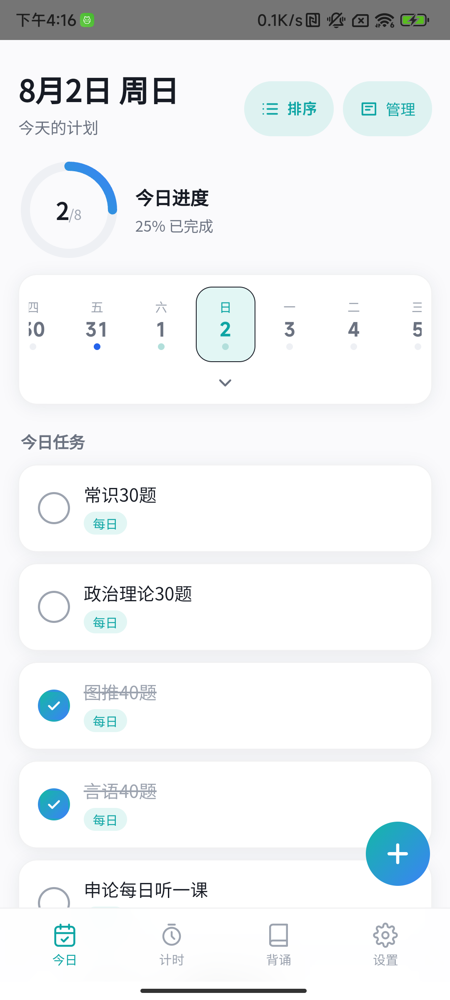
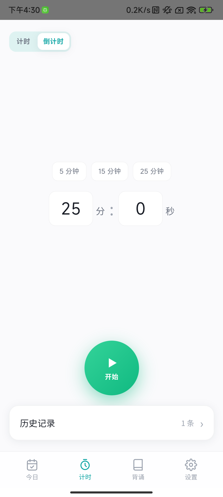
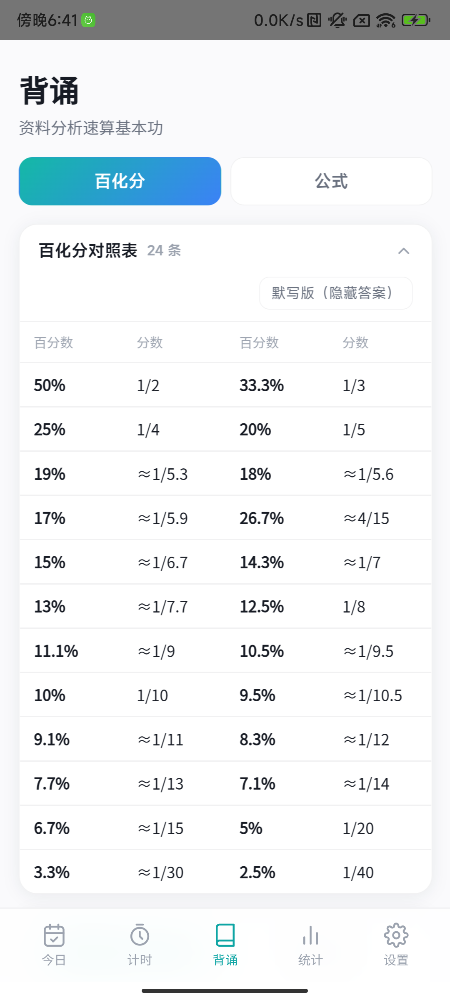
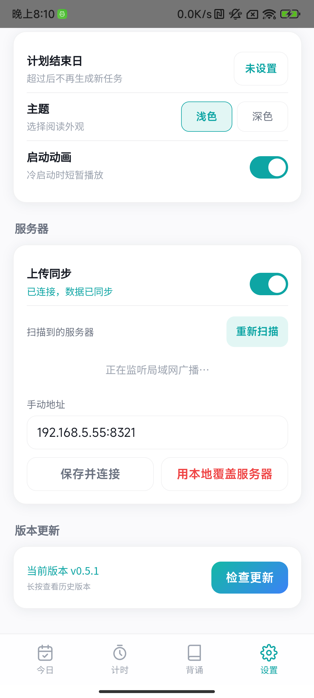

01
打开就是今天
按日期生成每日计划，已完成项目留在原位，未完成项目继续可见。进度和任务顺序在同一屏完成判断。
- 每日任务与截止任务并行
- 子任务拆解和顺序调整
- 日历标记与连续完成统计


Android 学习执行工具
把今天要做的题、要背的内容和要投入的时间放在一起。每天打开就知道从哪里开始，完成后留下可追踪的记录。
下载 Android APK 查看 v0.5.1 发布说明真实使用界面
应用围绕一天的执行顺序组织，不把任务、计时和训练拆成互不相关的工具。
按日期生成每日计划，已完成项目留在原位，未完成项目继续可见。进度和任务顺序在同一屏完成判断。

正向计时适合自由学习，倒计时适合限定一轮练习。暂停、继续、提前结束和历史记录都保留在同一流程里。
百化分与公式对照表可以直接阅读，也可以隐藏答案进入默写。练习记录会保留正确率，方便回到薄弱项。

手机可以离线使用，也可以连接电脑上的本地服务器同步。服务器自动发现、完整覆盖和局域网 APK 更新都由用户控制。

v0.5.1
安装包由 GitHub Release 提供。首次安装时，Android 会要求确认“允许安装未知来源应用”。
下载 kaogong-checkin-v0.5.1.apkC39DA4AA47DD6989CA0A571B913BD2D06D30751C19CE845F61B69FC582E18EA9